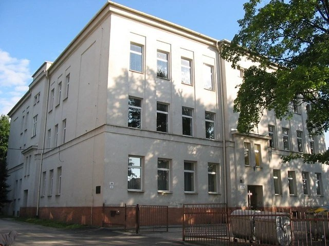
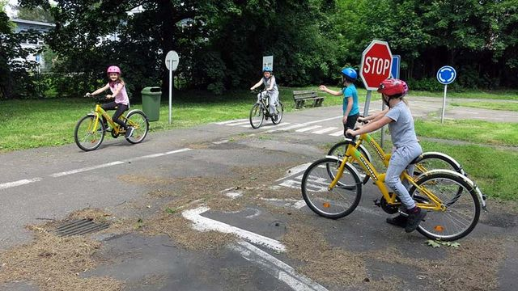
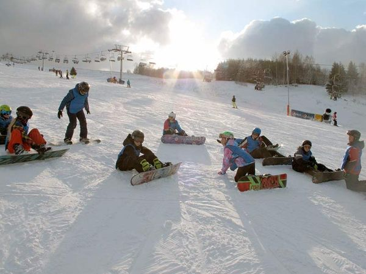

Wizyta w szkole zdrowotnejNávštěva zdravotnické školy
W piątek 13.11. starszaki idą na pierwszą z trzech wizyt. Spakujcie pelerynę.
V pátek 13. 11. jdou předškoláci na první ze tří návštěv. Přibalte pláštěnku.
Szkoła podstawowa i przedszkole z polskim językiem nauczania we Frysztacie. Uczymy od 1918 roku.
Základní a mateřská škola s polským jazykem vyučovacím ve Fryštátě. Učíme od roku 1918.
ul. Dr. Olszaka 156/2, Karviná-Fryštát596 317 672Sekretariat 7:30–15:30Sekretariát 7:30–15:30

W piątek 13.11. starszaki idą na pierwszą z trzech wizyt. Spakujcie pelerynę.
V pátek 13. 11. jdou předškoláci na první ze tří návštěv. Přibalte pláštěnku.
Wtorek 24.11. dla chętnych, także z rodzeństwem.
Úterý 24. 11. pro zájemce, i se sourozenci.
12.11. mgr Danuta Bogocz zbada mowę dzieci.
12. 11. vyšetří Mgr. Danuta Bogocz řeč dětí.
Obecność dziecka 29. i 30.10. zgłoście nauczycielkom do 29.9.
Docházku dítěte 29. a 30. 10. nahlaste učitelkám do 29. 9.
Wszystkie imprezy przedszkola na ten rok szkolny. Najbliższe są też w kalendarzu.
Všechny akce školky na tento školní rok. Nejbližší jsou i v kalendáři.
Wtorek 22.9., odjazd 8:15, powrót ok. 12:30.
Úterý 22. 9., odjezd 8:15, návrat kolem 12:30.
Wtorek 15.9. o 16:45 Czerwone Królestwo, środa 16.9. o 16:45 Zielone Królestwo.
Úterý 15. 9. v 16:45 Červené království, středa 16. 9. v 16:45 Zelené království.
Starszaki w czwartki, średniaki w piątki, 8:00–8:45 na basenie StaRS.
Předškoláci ve čtvrtek, střední děti v pátek, 8:00–8:45 v bazénu StaRS.
Sobota 6.6.2026 od 14:00. Program na stadionie zimowym, atrakcje w ogrodzie szkoły.
Sobota 6. 6. 2026 od 14:00. Program na zimním stadionu, atrakce na školní zahradě.
W testach SCIO szkoła znalazła się wśród 10 % najlepszych z matematyki i języka czeskiego.
V testech SCIO patří škola mezi 10 % nejúspěšnějších v matematice a češtině.
Zgłoszenie elektroniczne od 12.1. do 9.2., zapis w szkole w czwartek 12.2.2026.
Elektronická přihláška od 12. 1. do 9. 2., zápis ve škole ve čtvrtek 12. 2. 2026.
Zapisy na rok szkolny 2026/2027: czwartek 12.2.2026, 14:00–17:00.
Zápis na školní rok 2026/2027: čtvrtek 12. 2. 2026, 14:00–17:00.
16.10. od 8:00 do 12:00 ulica Dr. Olszaka i parking koło przedszkola będą zamknięte.
16. 10. od 8:00 do 12:00 bude ulice Dr. Olszaka a parkoviště u školky uzavřené.
Dokumenty do przedłużenia lub wydania legitymacji oddajcie do 6.10.2025.
Podklady k prodloužení nebo vydání průkazu odevzdejte do 6. 10. 2025.
Klasy 4.–9. ćwiczą na fińskiej platformie Eduten, w szkole i w domu.
Třídy 4.–9. procvičují na finské platformě Eduten, ve škole i doma.
Zbiórki w piątki. Harcerze startują od razu, zuchy w pierwszy piątek października.
Schůzky v pátek. Skauti začínají hned, vlčata první pátek v říjnu.
Kraina baśni dla dzieci od 2 do 7 lat. Trzy królestwa, basen, wycieczki i teatr.
Pohádková země pro děti od 2 do 7 let. Tři království, plavání, výlety a divadlo.
 PrzedszkoleŠkolka
PrzedszkoleŠkolka
Dla dzieci, które do 31.8.2027 skończą 6 lat. Zgłoszenie online, potem jedno popołudnie w szkole.
Pro děti, kterým bude do 31. 8. 2027 šest let. Přihláška online, pak jedno odpoledne ve škole.

Od 6:15 rano do 16:45, obiady dla uczniów i przedszkolaków.
Od 6:15 ráno do 16:45, obědy pro žáky i školáčky.

Sto lat polskiej szkoły we Frysztacie, Dr. Wacław Olszak i Gustaw Morcinek.
Sto let polské školy ve Fryštátě, Dr. Wacław Olszak a Gustaw Morcinek.

Wycieczki, kursy, projekty i święta z życia szkoły.
Výlety, kurzy, projekty a svátky ze života školy.
W testach SCIO 2026 nasi dziewiątacy znaleźli się wśród 10 % najlepszych szkół z matematyki i czeskiego.
V testech SCIO 2026 se naši deváťáci zařadili mezi 10 % nejúspěšnějších škol v matematice a češtině.
Testy pisało ponad 20 000 uczniów z całej Republiki Czeskiej.Testy psalo přes 20 000 žáků z celé České republiky.